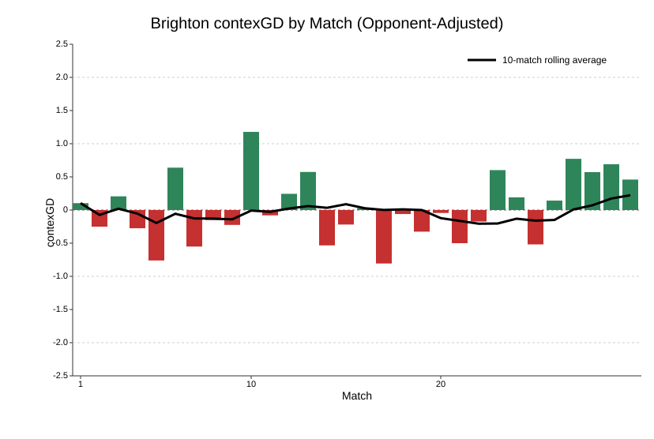

| Avoided Defeat with One Shot or Fewer | |||||
| Premier League since 2017-18 | |||||
| Date | Home | Away | Score | Home Shots | Away Shots |
|---|---|---|---|---|---|
| 2018-03-10 | Huddersfield | Swansea | 0-0 | 30 | 0 |
| 2020-10-18 | Crystal Palace | Brighton | 1-1 | 1 | 20 |
| 2023-05-22 | Newcastle United | Leicester | 0-0 | 23 | 1 |
| 2024-11-30 | Crystal Palace | Newcastle United | 1-1 | 16 | 1 |
| 2026-03-14 | West Ham | Manchester City | 1-1 | 1 | 24 |
Premier League Weekend Review: 14-15 March
football
Premier League
contexG
Arsenal are almost over the line, West Ham score from their only shot against Man City, and Spurs’ walking wounded grab an unlikely point at Anfield.
Arsenal are almost over the line, West Ham score from their only shot against Man City, and Spurs’ walking wounded grab an unlikely point at Anfield.
See my intro article for more information on contexG.
Burnley 0 - 0 Bournemouth
Arguably the least interesting of the two underwhelming Saturday 3 p.m. matches, and it finished 0-0. But this was actually quite an open game with around 4 xG in total.
Bournemouth had the better of it and substitute Enes Unal missed an absolute sitter to win it at the end. A disappointing result but not disastrous as they are still in the pack of teams chasing European football which will go down to 8th place unless West Ham, Leeds, Southampton or Port Vale win the FA Cup. Not much to add about Burnley who remain the worst team in the league.
Sunderland 0 - 1 Brighton
A deserved win for Brighton and a lesson in the randomness of football as Sunderland went ahead through a scrappy goal by Chris Rigg, only for it to be disallowed by VAR for offside, and then Brighton scored the winner shortly afterwards via a fluke mishit cross by Yakuba Minteh.
This continues an interesting run of form for Brighton. After a largely disappointing season, the last eight games have all had positive contexG with the exception of the defeat to Crystal Palace when Fabian Hurzeler surprisingly started 17-year-old Harry Howell.

What has been the driving force behind this form? I would have to do some more digging, but the re-signing of Pascal Gross may have helped, and Brighton still have an outside squeak of Europe. For Sunderland it’s a continuation of relegation-level performances, but this time they couldn’t conjure an unlikely result.
Arsenal 2 - 0 Everton
It feels like this day sort of encapsulated the Premier League title race. Similar performances from Arsenal and Manchester City but City could only draw, while Arsenal found a way to win. It was the 15th clean sheet of the season for Arsenal’s excellent defence and that will always give you a decent chance to take the points.
I’ve written before about Viktor Gyokeres’ lack of important contributions this season but he’s finally made an impact in recent weeks, scoring the go-ahead goal at Spurs and then the winner here after coming off the bench. It was admittedly a fortuitous goal as Jordan Pickford completely missed a cross which bounced off Hincapie and gifted Gyokeres an open goal.
With a nine-point lead and a soft fixture list, Arsenal are now almost 90% favourites on Betfair to win the league and it would be one of the biggest collapses of all-time if they don’t finish it off.
Chelsea 0 - 1 Newcastle
Impressive win for Newcastle missing all of their first-choice midfield trio and sandwiched between the season-defining legs against Barcelona. Honestly I thought Chelsea might give them a pummeling today and I got that completely wrong.
It wasn’t a terrible performance from Chelsea—22 shots to 7 and 33 touches in the box to Newcastle’s 12—but with Newcastle content to concede possession, you need some quality from your forwards and for all the money Chelsea have spent on this squad you have to question whether the likes of Garnacho and Delap, with just two league goals between them this season, are really good enough. The crucial win at Villa has now been undone a bit, and Chelsea find themselves outsiders in the Champions League race with Man City, Man United and Liverpool all still to face.
West Ham 1 - 1 Manchester City
A sixth draw for Man City since the new year in games they should have won, and that’s why Arsenal are winning the league. I think this City team are a bit underrated because they are below the expected level for a Guardiola team, but still ultimately a really good side that could have won the league this season. ContexG has them at +0.99 for the season compared to +1.07 for Arsenal.
This game was a good example of the levels even a sub-peak Guardiola team can achieve, off the back of a tough Champions League away game at Real Madrid. West Ham have been in good form lately and City played them off their own park: 72% possession, 40 penalty box touches to 6, and 24 shots to 1. It’s only the fifth time in the last nine seasons that a team has had one shot or fewer and managed to get a draw.
A valuable point for West Ham in the relegation fight but even against quality opposition this was a poor performance without the injured Crysencio Summerville, who seems to have been central to everything they’ve done well lately. It’s not clear exactly how long he will be out but it is anticipated that he will miss next week’s game, another tough assignment away to Aston Villa.
Crystal Palace 0 - 0 Leeds
Leeds ended up going off slight favourites for this game after shortening before kick-off, and the money looked sharp as they edged the first half with 7 shots to 4 including a penalty that Dominic Calvert-Lewin put wide. The game turned on a bizarre incident where Gudmundsson received a second yellow card but the referee initially didn’t realise he had already been booked. It begs the question of whether he would have given the yellow card if he had been aware; it tends to be a higher bar for a second yellow, and the foul didn’t look horrendous.
You would expect Palace to dominate the second half against ten men but they only managed 9 touches in the box and 0.4 xG after the break. Leeds are only three points from safety but they still have home games to come against Wolves and Burnley. They have performed like a mid-table Premier League team this season and should be fine.
Manchester United 3 - 1 Aston Villa
When Ruben Amorim was sacked on the 5th of January, Aston Villa were 11 points clear of Manchester United. Following this win, United are now 3 points ahead of Villa. It’s a stunning turnaround in the last 10 games with United taking 23 points and Villa just 9.
What has changed for Villa? Honestly, not much. A few injuries in midfield haven’t helped but performances don’t look drastically different. In this game they had 31 touches in the box to United’s 21, and the Fotmob xG was pretty even (1.07 - 1.02). That’s a reasonable effort at Old Trafford.

Still, with Chelsea losing and Liverpool drawing, it wasn’t a disastrous weekend for Villa and they are still in good shape for a Champions League spot. But they will need to rediscover that habit where they win every close game by a single goal.
Nottingham Forest 0 - 0 Fulham
A poor game at the City Ground with only 16 total shots and neither team reaching 20 touches in the penalty area. Fulham’s high line looked shaky at times but they just about escaped a couple of close offside calls.
I mentioned in my relegation piece that Forest have the biggest home:away split in my contexG ratings for the season. Fulham are a solid mid-table side, but ultimately these home games are where Forest are most likely to pick up the wins needed to stay up. With West Ham, Spurs and Leeds all picking up a point in more difficult fixtures, it was a disappointing weekend for Forest and they head to the Tottenham Hotspur Stadium next Sunday for a crucial relegation six-pointer. But first they have to travel to Denmark to try and overturn a 1-0 deficit against Midtjylland in the Europa League; it will be interesting to see Vitor Pereira’s approach to team selection in that one.
Liverpool 1 - 1 Tottenham Hotspur
This game almost felt like a write-off for Spurs ahead of the crucial clash against Nottingham Forest next week, but they picked up an unlikely point despite having 13 senior players absent through injury and suspension. Unexpectedly, Igor Tudor lined up with a back four and Brazilian teenage left back Souza playing right midfield.
Dominik Szoboszlai opened the scoring with a free kick that Vicario probably should have saved, and at half time Spurs had 5 touches in the box and 4 shots - it just felt like a question of how many more goals Liverpool would add.
But Liverpool were wasteful, and despite regularly getting into dangerous areas (45 touches in the box and 17 deep completions) they couldn’t add a second, while Spurs managed to create 13 shots for 1.18 xG with Richarlison grabbing the late equaliser. It was disappointing from Liverpool who should be able to lock down a game like this against a Spurs side bereft of confidence and with an extraordinary injury list.
In fact it could have been worse for Liverpool as Virgil Van Dijk pulled back Richarlison when clean through on goal, but because Richarlison stayed on his feet and got a shot away, nothing was given. It’s a tricky area for refs, but it seems regrettable that similar incidents with less contact have resulted in a penalty & red card - first for Maxence Lacroix at Old Trafford, and then Micky Van de Van in Tottenham’s last league game against Crystal Palace - and players are incentivised to go down if they want the golden double jeopardy reward.
Performance-wise it still wasn’t amazing from Spurs (contexG scores this 2.61 - 0.81) but they could have 4 or 5 players back next week including Romero and Van de Ven. For Liverpool, everything hinges on the forthcoming second leg against Galatasaray where they trail 1-0 but are still rated around 70% favourites to advance; elimination would mean Arne Slot is surely toast.
| Premier League 2025-26 contexG Ratings | ||
| 15 Mar, 2026 | ||
| Team | Matches | contexGD |
|---|---|---|
| Arsenal | 31 | 1.07 |
| Manchester City | 30 | 0.99 |
| Liverpool | 30 | 0.64 |
| Chelsea | 30 | 0.63 |
| Manchester United | 30 | 0.36 |
| Brentford | 29 | 0.17 |
| Newcastle United | 30 | 0.16 |
| Bournemouth | 30 | 0.04 |
| Crystal Palace | 30 | 0.02 |
| Brighton | 30 | 0.02 |
| Fulham | 30 | −0.02 |
| Aston Villa | 30 | −0.03 |
| Leeds | 30 | −0.10 |
| Everton | 30 | −0.30 |
| Tottenham | 30 | −0.36 |
| Nottingham Forest | 30 | −0.41 |
| Sunderland | 30 | −0.56 |
| West Ham | 30 | −0.59 |
| Wolves | 30 | −0.76 |
| Burnley | 30 | −0.99 |
There is one more Premier League game tomorrow, Brentford vs. Wolves. It’s a pretty big game for Brentford as the markets have them north of 60% to win, which would put them in a strong position for the Europa League spots.
Midweek we have the second legs of the round of 16 in Europe with Aston Villa the only English team holding a lead from the first leg. Approximate bookie odds to qualify are as follows, in descending order:
Aston Villa 90%
Arsenal 89%
Crystal Palace 74%
Liverpool 71%
Nottm Forest 40%
Newcastle 25%
Man City 17%
Chelsea 8%
Tottenham 3%
Next weekend is the League Cup final between Arsenal and Man City which means neither of them have a league fixture. The big Premier League game of the weekend is the relegation clash between Spurs and Forest, while Newcastle and Sunderland contest the Tyne-Wear derby with the Geordies looking for revenge. I’ll be back with my review next Sunday. Enjoy the football!
© 2026 John Knight. All rights reserved.